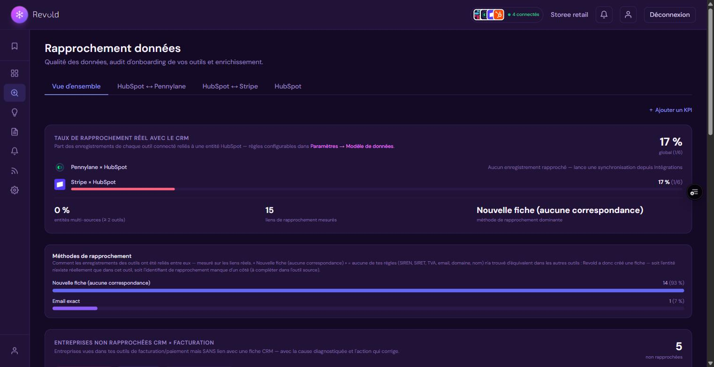
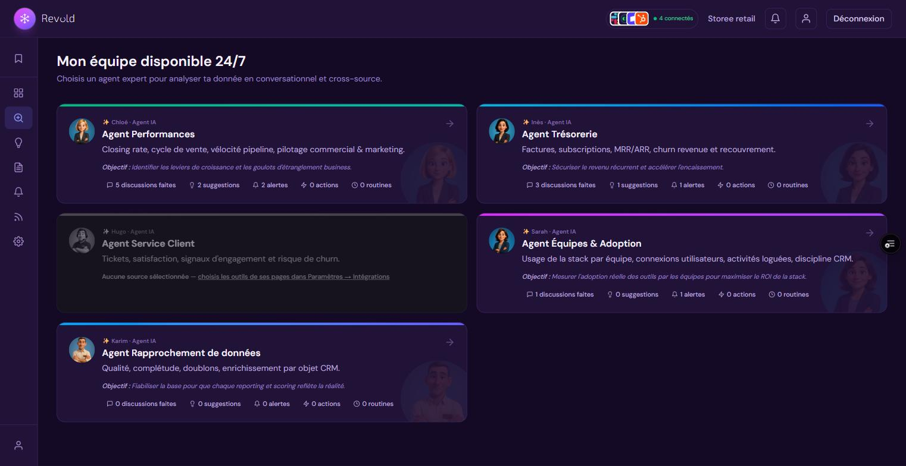
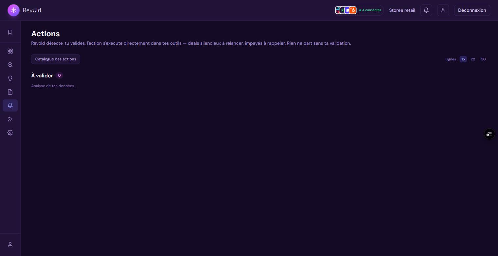
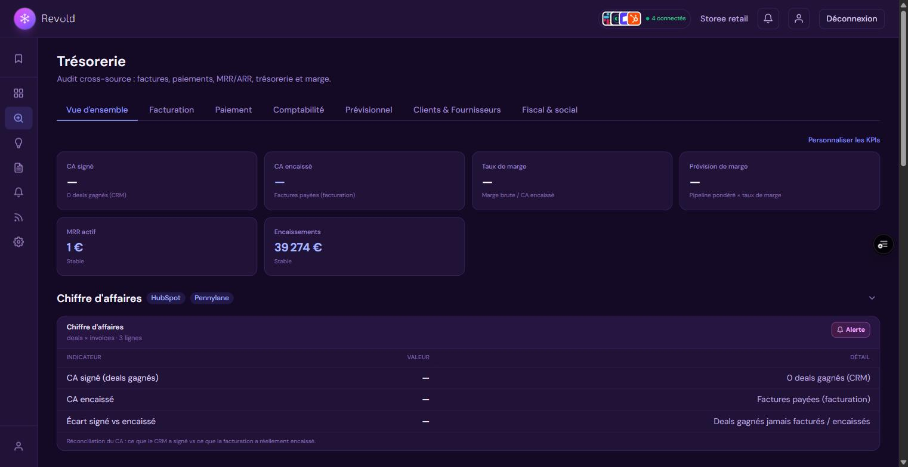

3Les six piliers fonctionnels
① Rapprochement et fiabilisation des données
Revold relie vos entreprises entre outils par leurs identifiants légaux — SIREN, SIRET, N° TVA — puis par email, domaine ou nom, selon une chaîne de règles dont vous maîtrisez l'ordre et l'activation. Chaque rapprochement est mesuré : vous voyez le taux réel par outil, les méthodes qui ont fonctionné, et les entreprises non rapprochées avec la cause diagnostiquée.

Surtout, Revold ne se contente pas de constater : il corrige. Le moteur d'enrichissement interroge la base officielle Sirene (INSEE) et les comptes déposés à l'INPI pour remplir les identifiants manquants, la raison sociale officielle, la tranche d'effectif, le dernier chiffre d'affaires déposé, le secteur d'activité, le statut juridique, le capital social et l'adresse du siège — puis écrit ces informations dans votre CRM, champs vides uniquement : une donnée saisie par vos équipes n'est jamais écrasée. Une source LinkedIn (bêta) complète l'effectif des entreprises que le registre officiel ne couvre pas, avec sa propre barre de progression. Chaque passe d'enrichissement est consignée dans un historique détaillé par donnée (« +12 SIREN · +30 effectifs »), et les propriétés CRM cibles sont vérifiées avant écriture — listes déroulantes comprises, dont les valeurs sont alignées sur les options existantes.

② Mon équipe IA, disponible 24/7
Quatre agents experts (Performances, Trésorerie, Service Client, Data) et un agent Reporting dédié à la construction de rapports. On leur parle en français — au clavier ou au micro — ils répondent avec vos chiffres réels, produisent des rapports visuels et proposent des actions. L'accompagnement dans la durée (objectifs, décisions, suivi) vit directement sur la page de chaque agent expert.
Chacun a un périmètre déclaré et le respecte : si votre question relève d'un autre métier, l'agent vous redirige explicitement vers le bon collègue au lieu de répondre à côté. Vous pouvez lui joindre un fichier Excel ou un lien Google Sheets partagé pour qu'il travaille dessus, et choisir outil par outil les sources que chaque agent utilise (Paramètres → Intégrations).

Les agents ne calculent jamais eux-mêmes. Ils interrogent un moteur déterministe qui exécute la requête sur vos données, puis rédigent l'analyse à partir du résultat. Changer la période d'un rapport le recalcule en base, sans repasser par l'IA : le même chiffre donne toujours le même chiffre.
③ Routines et récaps automatiques
Vous choisissez une période (semaine, mois, trimestre, année ou dates personnalisées) et les thèmes macro à couvrir — pour les ventes : récap des ventes, deals en cours, performance des commerciaux, closing rate, projection. L'agent génère un aperçu que vous modifiez avant de le programmer : retirer un KPI, réordonner les blocs, en ajouter un nouveau dont le câblage est vérifié. Ensuite, le récap arrive automatiquement — l'exécution se fait côté serveur, même application fermée.
④ Alertes, objectifs et actions exécutées
Les alertes et objectifs surveillent vos seuils en continu et vous notifient dans l'application, par email, Slack ou Teams. Avant toute création, Revold affiche la vérification du câblage : la donnée réellement suivie, l'outil source, et la valeur actuellement calculée.
La boîte d'Actions ferme la boucle. Huit familles d'actions sont détectées en continu et exécutées dans vos outils après votre validation : deals silencieux à relancer, impayés à relancer, doublons à fusionner, fiches de facturation à relier au CRM, deals de renouvellement manquants, écarts entre montant signé et montant facturé, contacts de facturation à créer, tâches attribuées à suivre. Le catalogue est activable détecteur par détecteur, et le ROI des actions exécutées est mesuré.
Chaque famille peut rester en validation manuelle ou passer en mode automatique, avec des exceptions déclarables compte par compte pour vos clients stratégiques. La fusion de doublons, elle, reste toujours validée à la main — elle est irréversible.

⑤ Tour de contrôle vocale
Sur la page d'accueil, une orbe vocale répond à la voix : demandez votre brief du jour — chaque famille de données est annoncée puis chiffrée : alertes en tension avec la valeur actuelle face au seuil (alertes techniques comprises), radar de facturation avec le montant à facturer et les clients concernés, objectifs en retard ou atteints avec leur progression et leur échéance, synchronisations en échec, enrichissement, actions exécutées et vos données personnalisées. Posez une question KPI simple, créez une alerte, ou naviguez dans la plateforme. L'anneau autour de l'orbe change de couleur selon l'état réel du compte : un coup d'œil suffit.
⑥ Pages métier et visualisations sur mesure
Chaque pôle dispose de sa page — Performances (Ventes, Marketing, Publicité), Trésorerie et ses sous-pages (Facturation, Paiement, Comptabilité, Prévisionnel, Fiscal), Service Client (Process, Churn, Cross-sell, Renouvellement), Appels, Rapprochement données — avec ses tuiles KPI et ses blocs, configurables : tuiles ajoutables, retirables et renommables, blocs à la carte. Vous pouvez créer vos propres visualisations via un funnel guidé : choix des sources à croiser, choix du KPI (ou description libre du vôtre), vérification du câblage sur données réelles, puis choix de l'affichage (tableau, barres, courbe, anneau, bloc). Des tableaux de bord personnalisés complètent la vue d'ensemble.
